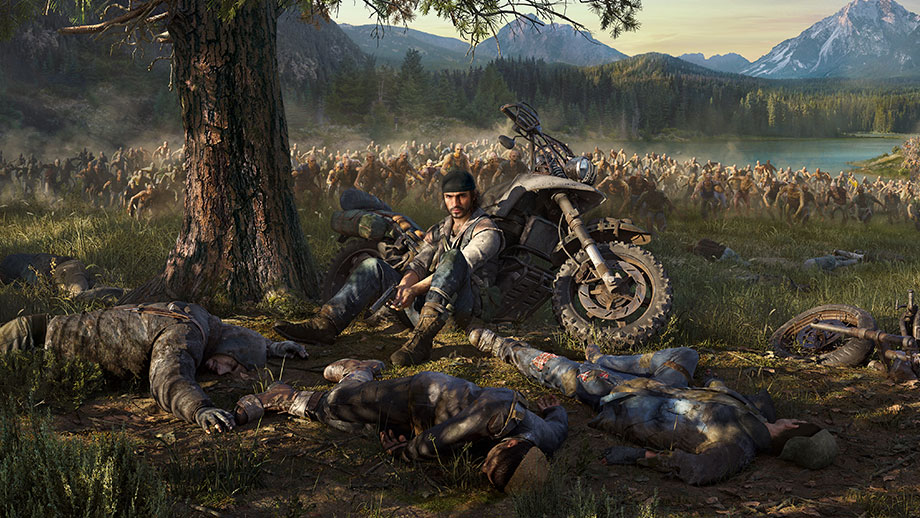
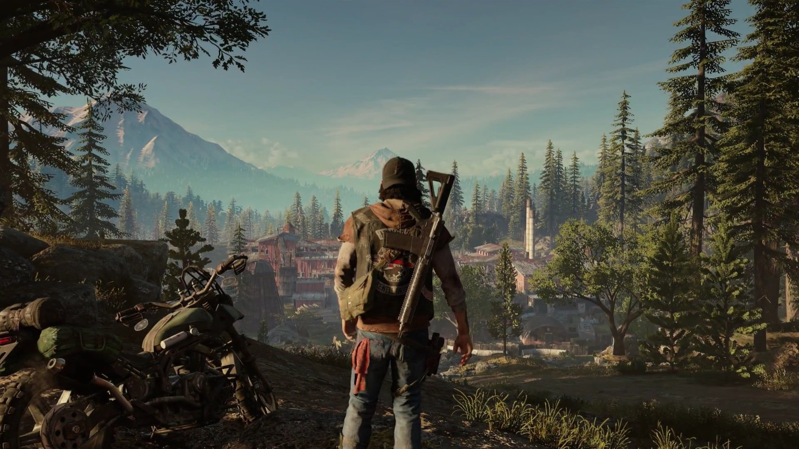
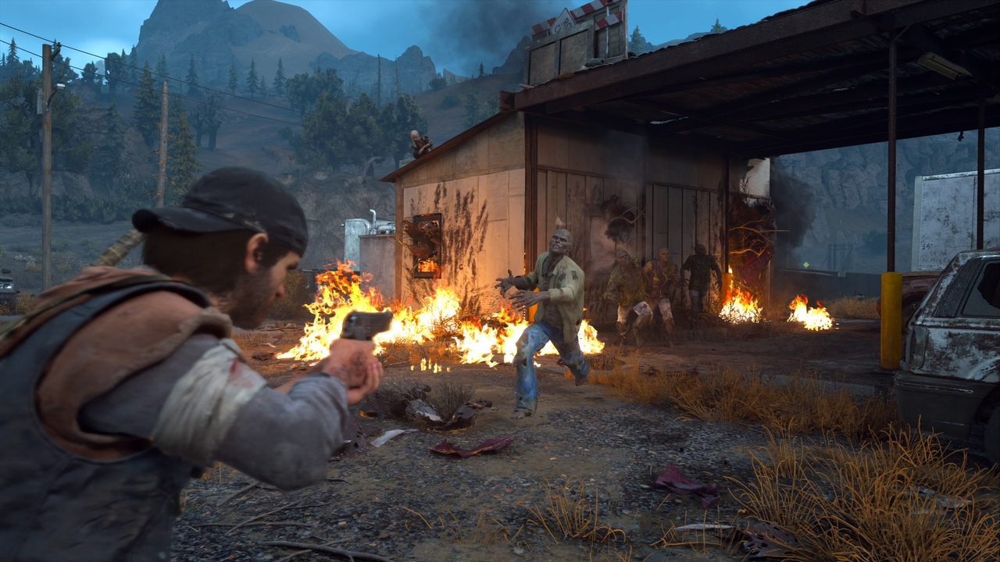
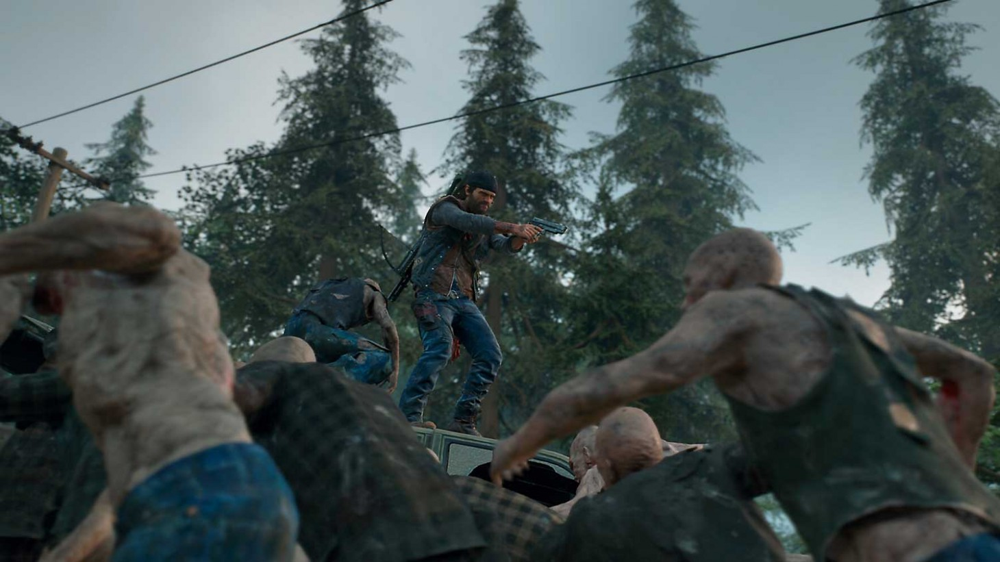
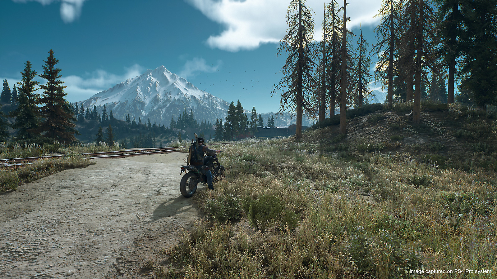

Days Gone - это приключенческий шутер про выживание в открытом мире, полном зомби, которых в этом мире называют фрикерами, а также сумасшедших людей, который игроки вольны исследовать на своих двоих или в седле верного мотоцикла. События игры разворачиваются спустя два года после глобальной пандемии, которая уничтожила старый мир, обратив большую часть человечества во фрикеров. Главный герой - бывший преступник по имени Дикон Сейнт-Джон - скитается по миру в поисках приключений.
Игроков ждут взаимоотношения героя и немногочисленных выживших, попытки наладить контакт с некоторыми фрикерами, а также исследование заброшенных городов и поселков с целью поиска полезных припасов. Days Gone предлагает игрокам большой открытый мир, который можно обойти вдоль и поперек без особых проблем - главное, чтобы было желание.

Оценки и мнения
Игра получила в основном «смешанные отзывы» от критиков и рецензентов различных изданий согласно данным агрегатора Metacritic. Средний балл оценок игры составляет 72 балла из 100 на основе 99 рецензий от различных изданий. На другом сайте агрегаторе рецензий OpenCritic, средний балл основанный на 107 рецензиях, также составил 72 балла из 100 возможных. Большинство рецензентов не сошлись в едином мнении касательно игры, а ключевыми недостатками критики называют однотипные задания, структуру открытого мира и технические недоработки игры. При этом, критики хвалят базовые механики, реализацию огромных орд «фрикеров», художественное оформление и звуковое сопровождение.